| [ Team LiB ] |
|
3.12 Converting State Space Models to Transfer FunctionsA general state space model can be converted to transfer function form, using the following steps. Starting with the state space model 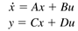 Take the Laplace transform of each term, assuming zero initial conditions 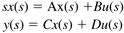 Solving for x(s), then y(s) (it should be noted that often D = 0) 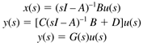 where G(s) is a transfer function matrix. For example, the transfer function relating input j and output i is 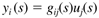 or in matrix form (with m inputs and r outputs) 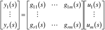 Example 3.9: Isothermal CSTRConsider the isothermal CSTR shown in Example 3.3 and Module 5. The state space model is 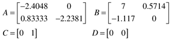 The first input (u1, manipulated) is the dilution rate (F/V), the second input (u2, disturbance) is the feed concentration (CAf), and the output is the concentration of the intermediate component, B. The eigenvalues of A (obtained by solving det(lI – A) = 0) are –2.4048 and –2.2381 min-1. The sequence of steps used to find the transfer function matrix is 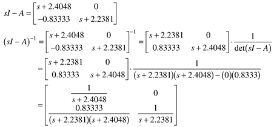 and multiplying, 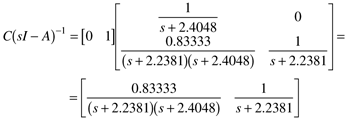 Also, 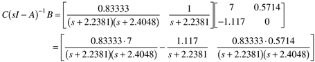 The manipulated input-output process transfer function for the reactor is 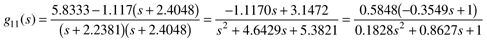 and the disturbance input-output transfer function is 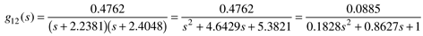 The transfer function poles (–2.2381 and –2.4048) are equal to the eigenvalues of the A matrix. Also, the positive zero (1/0.3549) in g11(s) yields the inverse response shown in Figure 3-5. We see that it is straightforward to convert state space models to transfer function models. An n-state system results in transfer functions that have a denominator polynomial that is nth order in s, that is, with n poles. Sometimes the resulting transfer functions can be factored into lower order transfer functions because of pole-zero cancellation (a value of a pole is equal to a value of a zero). An example of pole-zero cancellation is shown in Exercise 13. |
| [ Team LiB ] |
|